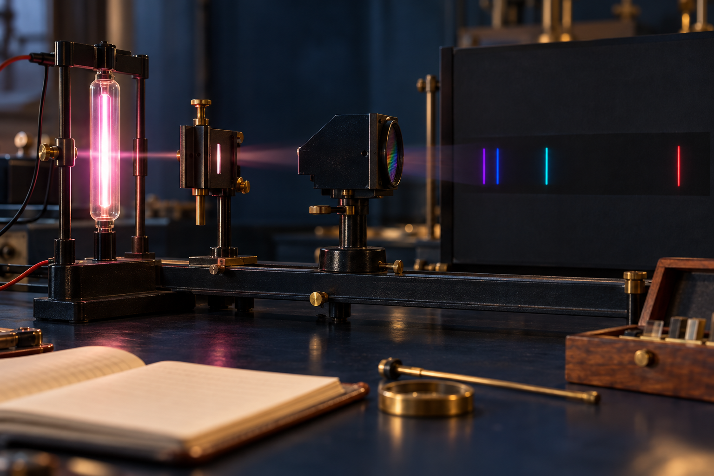
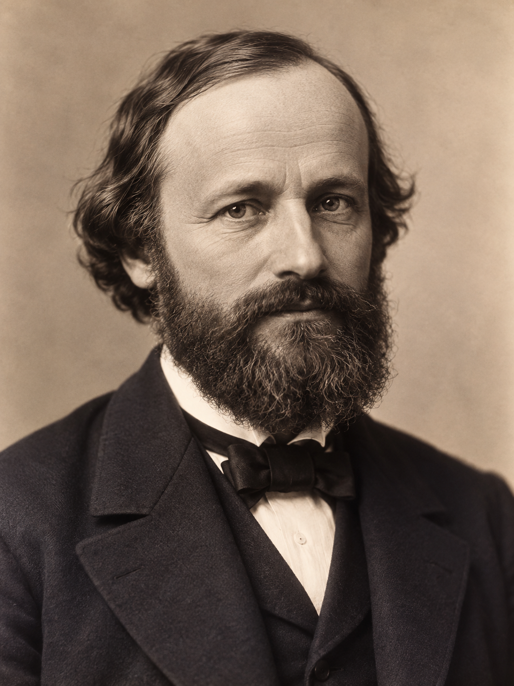
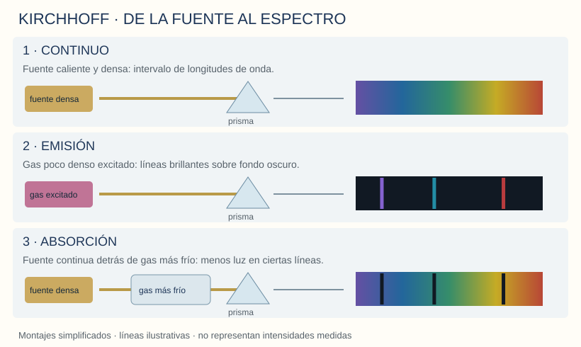
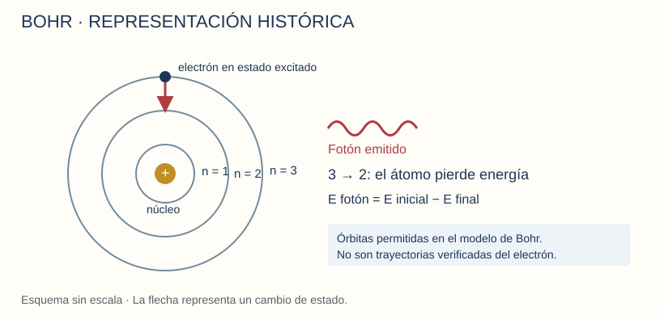
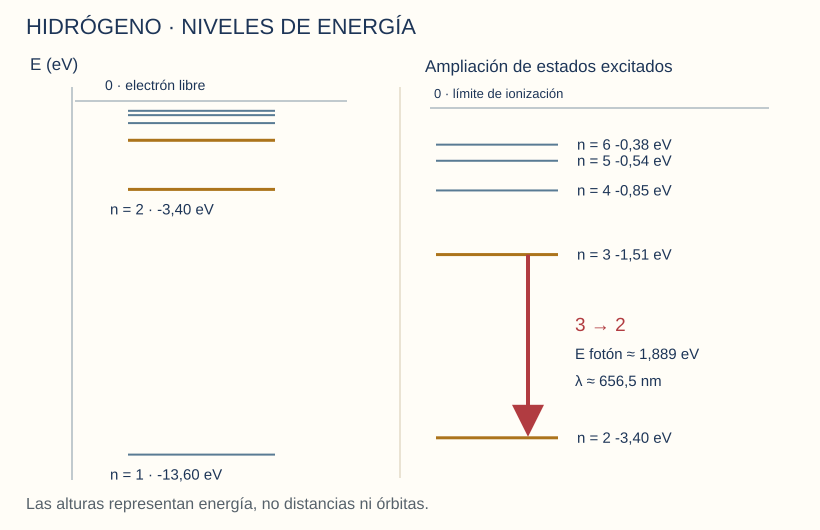
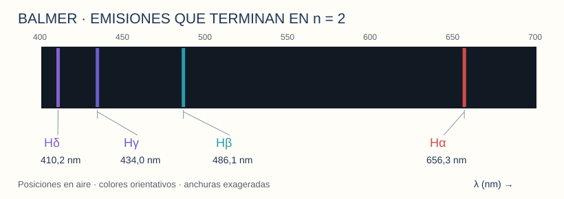

Sistemas Multi Física · Profesor Javier Pereyra
Modelo de Bohr y espectros atómicos
Del fotón al átomo: por qué el hidrógeno emite ciertos colores y cómo la luz nos cuenta de qué están hechas las estrellas.

1 Una pregunta que dejó la clase de fotones
En la clase 15 usamos \(E=hf\): la frecuencia determina la energía de un fotón. En la clase 16, sobre Compton, estudiamos cómo los fotones intercambian energía y cantidad de movimiento con electrones aproximadamente libres. Ahora observamos un tubo de hidrógeno excitado y separamos su luz. Aparecen líneas de colores, con zonas oscuras entre ellas. ¿Por qué el átomo entrega algunas energías y no cualquier valor?
La luz contiene patrones de líneas.
Las diferencias de energía fijan los fotones posibles.
Comparamos patrones para identificar elementos.
Analogía inicial: si los estados del átomo fueran peldaños, no podríamos elegir cualquier altura para detenernos. Sirve para pensar energías permitidas; el electrón no es una persona que sube escalones y los niveles no están separados por intervalos iguales.
2 Espectro: separar para conocer
Un espectro muestra cómo se distribuye la radiación según su longitud de onda o frecuencia. El espectroscopio permite separar sus componentes. El color global de una lámpara mezcla esas componentes: fuentes que se ven parecidas pueden tener espectros distintos.
Un prisma separa colores por dispersión; una red de difracción los separa mediante interferencia. El espectro también puede extenderse al ultravioleta o al infrarrojo, fuera de lo visible.
Continuo
Presenta un intervalo sin líneas aisladas: por ejemplo, radiación térmica de un filamento caliente.
De líneas
Presenta longitudes de onda particulares. Es una pista sobre la estructura interna de los átomos.
3 Kirchhoff y Bunsen: tres situaciones
Gustav Kirchhoff (1824–1887), físico alemán, desarrolló con Robert Bunsen el análisis espectral en 1859 y lo publicó en 1860. Relacionaron las líneas brillantes emitidas por sustancias calentadas con las líneas oscuras del espectro solar: un gas puede absorber las mismas longitudes de onda que emite, si los átomos están en los estados apropiados.
Su descubrimiento abrió una nueva forma de investigar: identificar sustancias por su luz y estudiar la composición del Sol. Juntos descubrieron el cesio en 1860 y el rubidio en 1861 mediante líneas espectrales que no correspondían a elementos conocidos.

Las leyes espectroscópicas de Kirchhoff describen las siguientes situaciones; son diferentes de las leyes de circuitos.
En celular, desplazá el esquema hacia los lados para leerlo completo.

- Fuente caliente y densa: un sólido, un líquido o un gas suficientemente denso produce aproximadamente un espectro continuo térmico.
- Gas poco denso excitado: produce líneas de emisión, brillantes sobre un fondo oscuro.
- Luz continua que atraviesa un gas más frío: presenta líneas de absorción, con menor intensidad en ciertas longitudes de onda.
Una transición puede absorber y emitir la misma energía. Para absorber, debe haber átomos en el estado inicial apropiado. Las condiciones del gas modifican la intensidad de las líneas.
4 Bohr: explicar al hidrógeno
El modelo nuclear de Rutherford concentraba la carga positiva en un núcleo. Pero una órbita clásica del electrón planteaba un problema: al estar acelerado debería radiar, perder energía y cambiar de órbita. Tampoco explicaba las líneas discretas.
En 1913, Niels Bohr propuso estados permitidos para el hidrógeno. En su modelo histórico, el electrón ocupa órbitas estacionarias y no irradia mientras permanece en una de ellas; el intercambio de radiación ocurre entre estados.
Desplazá el esquema para leerlo completo.

Núcleo pequeño con carga positiva.
Intercambio energético mediante cuantos y fotones.
Estados permitidos y transiciones en hidrógeno.
Orbitales y probabilidades, sin órbitas clásicas definidas.
5 Una escalera que se comprime
Energías aproximadas del hidrógeno:
\(n=1,2,3,\ldots\) es el número cuántico principal; \(E_n\) es la energía del estado. \(n=1\) es el estado fundamental; los de mayor \(n\) son estados excitados.
Elegimos \(E=0\) para el electrón libre, en reposo y separado del protón a gran distancia. Los valores negativos indican estados ligados: hay que aportar energía para liberar el electrón. Un nivel menos negativo tiene mayor energía.
Desplazá el diagrama para leer las etiquetas.

| \(n\) | \(E_n\) (eV) | Lectura |
|---|---|---|
| 1 | −13,60 | Fundamental |
| 2 | −3,40 | Primer estado excitado |
| 3 | −1,51 | Excitado |
| 4 | −0,85 | Excitado |
| 5 | −0,54 | Excitado |
| 6 | −0,38 | Excitado |
| Límite | 0 | Electrón libre |
Ionizar no es solo excitar: desde \(n=1\), se necesitan al menos \(13{,}6\ \mathrm{eV}\) para liberar el electrón. Desde \(n=2\), el mínimo es \(3{,}4\ \mathrm{eV}\). Si un fotón ionizante supera ese mínimo, el excedente aparece como energía cinética, despreciando el retroceso del protón.
6 Emisión y absorción: balance energético
Emisión
El átomo termina con menor energía y emite un fotón:
\(E_\gamma=E_i-E_f>0\).
En hidrógeno, \(n_i>n_f\).
Absorción
El átomo termina con mayor energía al absorber un fotón:
\(E_\gamma=E_f-E_i>0\).
En hidrógeno, \(n_f>n_i\).
\(E_\gamma\): energía positiva del fotón; \(E_i,E_f\): energías inicial y final; \(h\): constante de Planck; \(f\): frecuencia; \(c\): velocidad de la luz en el vacío; \(\lambda\): longitud de onda en vacío.
Una diferencia de energía mayor produce un fotón de mayor frecuencia y menor longitud de onda. Entre estados ligados, su energía debe coincidir con la diferencia de niveles, dentro del ancho físico de la línea. También puede haber excitación mediante colisiones.
En un tubo de descarga, las colisiones preparan muchos átomos en distintos estados excitados. Cada átomo puede desexcitarse en un paso o en una cascada de transiciones: si cada paso emite un fotón, sus energías suman la diferencia total. El conjunto de átomos produce el patrón de líneas del tubo.
| Magnitud | Símbolo | Unidad o valor |
|---|---|---|
| Energía | \(E\) | J; \(1\ \mathrm{eV}=1{,}602\times10^{-19}\ \mathrm J\) |
| Frecuencia | \(f\) | Hz = s⁻¹ |
| Longitud de onda | \(\lambda\) | m; \(1\ \mathrm{nm}=10^{-9}\ \mathrm m\) |
| Constante de Planck | \(h\) | \(6{,}626\times10^{-34}\ \mathrm{J\,s}\) |
| Velocidad en vacío | \(c\) | \(2{,}998\times10^8\ \mathrm{m/s}\) |
| Producto útil | \(hc\) | \(1240\ \mathrm{eV\,nm}\) |
Usá \(\lambda(\mathrm{nm})\approx1240/E_\gamma(\mathrm{eV})\). Para usar \(h\) en J·s, convertí primero a joules. El eV es una unidad de energía; el V es una unidad de tensión.
7 Hidrógeno: la serie de Balmer
Las emisiones que terminan en \(n_f=2\) forman la serie de Balmer. Las primeras líneas son visibles; las siguientes se acercan al ultravioleta. Johann Balmer encontró un patrón matemático antes del modelo de Bohr.
Desplazá el espectro para ver toda la escala.

| Emisión | Línea | Modelo (eV) | Modelo (nm) | Referencia en aire (nm) |
|---|---|---|---|---|
| \(3\to2\) | Hα · roja | 1,889 | 656,5 | 656,3 |
| \(4\to2\) | Hβ · azul verdosa | 2,550 | 486,3 | 486,1 |
| \(5\to2\) | Hγ · azul violeta | 2,856 | 434,2 | 434,0 |
| \(6\to2\) | Hδ · violeta | 3,022 | 410,3 | 410,2 |
Las diferencias combinan redondeo de constantes, aproximaciones del modelo y la distinción entre aire y vacío. Los valores tabulados provienen de NIST; no son mediciones del laboratorio virtual.
Ampliación: relación de Rydberg
Para emisiones, \(n_i>n_f\):
\[\frac{1}{\lambda}=R_H\left(\frac{1}{n_f^2}-\frac{1}{n_i^2}\right)\]
\(R_H\approx1{,}097\times10^7\ \mathrm{m^{-1}}\). Es otra forma de expresar el patrón. En esta clase alcanza con calcular diferencias de energía y usar \(E_\gamma=hc/\lambda\).
8 Laboratorio: del nivel al fotón
Animación didáctica · Remotion
Para leer los dos paneles en celular, desplazá el video hacia los costados. Usá los controles para pausar o repetir.
- Absorción: el átomo comienza en \(n=2\). Recibe un fotón de aproximadamente \(1{,}889\ \mathrm{eV}\) y pasa a \(n=3\).
- Emisión: la transición seleccionada \(3\to2\) libera la misma diferencia de energía en un nuevo fotón. El modelo redondeado predice \(656{,}5\ \mathrm{nm}\) en vacío.
- Balmer: diferentes descensos hacia \(n=2\), en un conjunto de átomos, producen diferentes líneas. No todos los átomos realizan una misma secuencia.
Elegí niveles y proceso. Anticipá quién gana energía y contrastá tu predicción con el diagrama y las lecturas.
Explorador de transiciones del hidrógeno
El diagrama se puede desplazar hacia los lados.
La flecha indica el cambio entre estados; el punto luminoso representa el fotón.
Átomo ideal preparado en el estado inicial. No calcula intensidades, probabilidades ni tiempos reales. La flecha une niveles de energía; no dibuja la trayectoria espacial de un electrón. Animación ralentizada. Los colores asignados al ultravioleta y al infrarrojo son convenciones del dibujo: no son colores que podamos ver.
Desafío: ¿un descenso de un solo valor de \(n\) siempre libera la misma energía? Compará \(3\to2\) con \(2\to1\).
9 Dos ejemplos resueltos
A. Línea roja: emisión \(3\to2\)
Problema: un átomo pasa de \(n=3\) a \(n=2\). ¿Qué fotón emite?
Datos: \(E_3=-13{,}6/9=-1{,}511\ \mathrm{eV}\); \(E_2=-13{,}6/4=-3{,}400\ \mathrm{eV}\).
Fórmula: \(E_\gamma=E_i-E_f\); \(\lambda=hc/E_\gamma\).
Reemplazo: \(E_\gamma=-1{,}511-(-3{,}400)=1{,}889\ \mathrm{eV}\).
\[\lambda\approx\frac{1240\ \mathrm{eV\,nm}}{1{,}889\ \mathrm{eV}}\approx656{,}5\ \mathrm{nm}\]
Resultado: \(E_\gamma\approx3{,}03\times10^{-19}\ \mathrm J\); \(f\approx4{,}57\times10^{14}\ \mathrm{Hz}\).
Interpretación: el átomo pierde energía y emite un fotón rojo. El cálculo aproxima Hα, tabulada cerca de \(656{,}3\ \mathrm{nm}\) en aire.
B. Excitar sin ionizar: absorción \(2\to4\)
Problema: el átomo está en \(n=2\). ¿Qué energía debe absorber para llegar a \(n=4\)?
Datos: \(E_2=-3{,}40\ \mathrm{eV}\); \(E_4=-0{,}85\ \mathrm{eV}\).
Fórmula: \(E_\gamma=E_f-E_i\); \(\lambda=hc/E_\gamma\).
Reemplazo: \(E_\gamma=-0{,}85-(-3{,}40)=2{,}55\ \mathrm{eV}\).
\[\lambda\approx\frac{1240\ \mathrm{eV\,nm}}{2{,}55\ \mathrm{eV}}\approx486{,}3\ \mathrm{nm}\]
Resultado: \(E_\gamma\approx4{,}09\times10^{-19}\ \mathrm J\).
Interpretación: se absorbe un fotón azul verdoso. El electrón sigue ligado porque su energía final es negativa. Un átomo en \(n=1\) no hace esta transición con ese fotón.
10 Una huella para cada elemento
Hidrógeno, sodio y helio presentan patrones diferentes. La identificación compara varias posiciones de líneas con referencias: una coincidencia aislada puede ser ambigua. También importa el estado de ionización.
Comparador de espectros
Desplazá el gráfico para ver el intervalo de 400 a 700 nm.
Selección de líneas visibles de átomos neutros, no su espectro completo. Posiciones tabuladas en aire. Alturas y grosores convencionales, sin intensidades experimentales. En absorción se supone una fuente continua detrás del gas y población suficiente en los niveles inferiores correspondientes.
| Elemento neutro | Líneas de referencia |
|---|---|
| Hidrógeno · H I | 410,2 · 434,0 · 486,1 · 656,3 |
| Sodio · Na I | 589,0 · 589,6 (doblete amarillo) |
| Helio · He I | 447,1 · 501,6 · 587,6 · 667,8 |
Lectura: cada pico marca una longitud de onda. El doblete del sodio puede parecer una sola línea a esta escala; un instrumento de mayor resolución permite separarlo.
Aplicaciones cercanas: emisión rojiza del hidrógeno en ciertas nebulosas y luz amarilla de lámparas de sodio. Los carteles llamados “de neón” pueden contener otros gases o usar otras tecnologías.
11 Experiencia: comparar fuentes de luz
Pregunta: ¿todas las fuentes blancas tienen el mismo espectro? Esta experiencia compara distribuciones; no identifica automáticamente todos los materiales de una lámpara.
Materiales: espectroscopio escolar o red de difracción, LED blanco, lámpara fluorescente disponible, filamento incandescente si ya existe en el laboratorio y hoja de registro. También podés trabajar con espectros dados.
- El docente coloca las fuentes en soportes, con una geometría de observación comparable.
- Observá cada fuente. Registrá líneas, bandas anchas y regiones de mayor brillo.
- Compará y explicá. Si el instrumento no está calibrado, anotá colores y posiciones relativas sin inventar longitudes de onda.
Variables: cambiamos la fuente; observamos la distribución espectral; mantenemos instrumento, orientación y luz ambiente. La intensidad global no basta para decidir si el espectro es continuo.
| Fuente | ¿Bandas o líneas? | Colores destacados | Explicación provisional |
|---|---|---|---|
| LED blanco | __________ | __________ | __________ |
| Fluorescente | __________ | __________ | __________ |
| Filamento / espectro dado | __________ | __________ | __________ |
Análisis: el filamento aproxima un continuo térmico; la fluorescente combina líneas del gas con emisión del recubrimiento; un LED blanco suele combinar un pico azul y una banda del fósforo. Son fuentes reales con más procesos que el gas atómico ideal.
12 Actividades: calcular y justificar
Usá \(E_n=-13{,}6/n^2\ \mathrm{eV}\) y \(hc\approx1240\ \mathrm{eV\,nm}\). Mostrá datos, cálculo, unidades e interpretación.
- Clasificá y justificá: a) filamento caliente; b) gas poco denso excitado sin fuente de fondo; c) luz continua detrás de gas más frío. Dibujá los tres espectros.
- Un cartel se ve rojo. ¿Eso demuestra que emite una sola longitud de onda? ¿Qué instrumento y observación necesitarías?
- Calculá \(E_1\), \(E_2\) y \(E_4\). Ordenalos de menor a mayor y explicá el signo negativo.
- Para \(4\to2\), calculá energía del fotón en eV y J, longitud de onda y región del espectro. Compará con Hβ.
- Calculá los fotones de \(2\to1\) y \(3\to2\). ¿Cuál tiene mayor frecuencia? ¿Por qué “bajar un nivel” no implica siempre la misma energía?
- Un átomo está en \(n=1\) y recibe un fotón de \(2{,}55\ \mathrm{eV}\). ¿Puede realizar \(2\to4\)? ¿Qué condición falta? ¿Qué energía necesita para \(1\to2\)?
- Construí una tabla para \(3,4,5,6\to2\): transición, energía (eV), longitud de onda (nm) y color. Graficá cuatro picos entre 400 y 700 nm con altura unitaria. Explicá qué representa esa altura.
- Una muestra presenta líneas cerca de 410,2; 434,0; 486,1 y 656,3 nm. Comparala con la sección 10. ¿Qué elemento es compatible? ¿Podés asegurar que la muestra es pura?
- Calculá la energía mínima de ionización desde \(n=2\). Si absorbe un fotón de \(4{,}0\ \mathrm{eV}\) y se ioniza, ¿qué energía cinética aproximada tendrá el electrón?
- Explicá en cuatro oraciones cómo una línea oscura estelar puede revelar un elemento. Incluí fuente continua, absorción, nivel inicial y comparación de patrones.
Orientaciones y resultados para revisar después
- a) Continuo; b) emisión; c) absorción.
- No: separá la luz y compará sus componentes.
- −13,6 < −3,4 < −0,85 eV. Estados ligados.
- 2,55 eV ≈ 4,09 × 10⁻¹⁹ J; 486,3 nm, visible.
- 2→1: 10,2 eV y 121,6 nm (UV); 3→2: 1,889 eV y 656,5 nm. El primero tiene mayor frecuencia.
- No está en n=2. Para 1→2 necesita 10,2 eV.
- 1,889; 2,550; 2,856; 3,022 eV. 656,5; 486,3; 434,2; 410,3 nm. Alturas convencionales, no intensidades medidas.
- Compatible con hidrógeno; no demuestra pureza.
- Mínimo: 3,4 eV. Excedente cinético: ≈ 0,6 eV.
- Relacioná las cuatro ideas y los estados iniciales apropiados.
13 Límites y preguntas para pensar
Las órbitas de Bohr no son trayectorias verificadas. El modelo no explica completamente átomos con varios electrones, intensidades ni detalles finos de las líneas. El modelo cuántico posterior utiliza orbitales: estados que permiten calcular probabilidades de encontrar el electrón.
- ¿Qué observación sería difícil de explicar con energías atómicas continuas?
- ¿Por qué emisión y absorción pueden aparecer en la misma longitud de onda?
- ¿Un fotón violeta tiene más energía que uno rojo? ¿Una lámpara violeta siempre entrega más potencia que una roja?
- ¿Qué logró Bohr y qué preguntas quedaron abiertas?
Comprobación rápida
14 Fuentes y continuidad
- OpenStax · Espectroscopia en astronomía: tipos de espectro y análisis estelar.
- OpenStax · Formación de líneas: transiciones y estados iniciales.
- OpenStax · Modelo de Bohr y teoría del hidrógeno.
- Premio Nobel · Niels Bohr: reseña y premio de 1922.
- Universidad de Heidelberg · Vida y trabajo de Kirchhoff: análisis espectral con Bunsen y descubrimientos de cesio y rubidio.
- NIST · Líneas de hidrógeno, sodio y helio. Conversión: 1 Å = 0,1 nm.
Para continuar: pasar de órbitas a orbitales y explorar la dualidad onda-partícula. ¿Cómo describimos un electrón cuando una trayectoria clásica ya no alcanza?